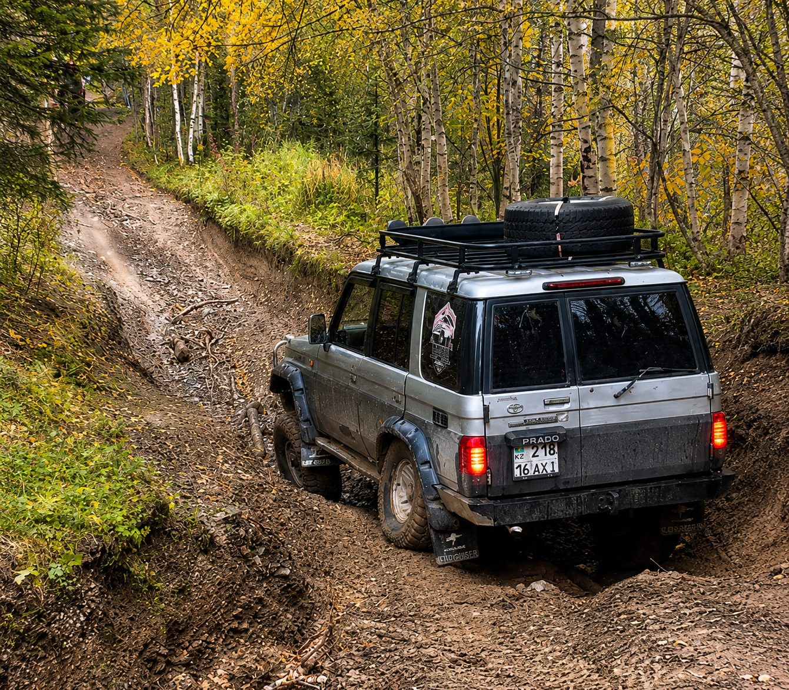
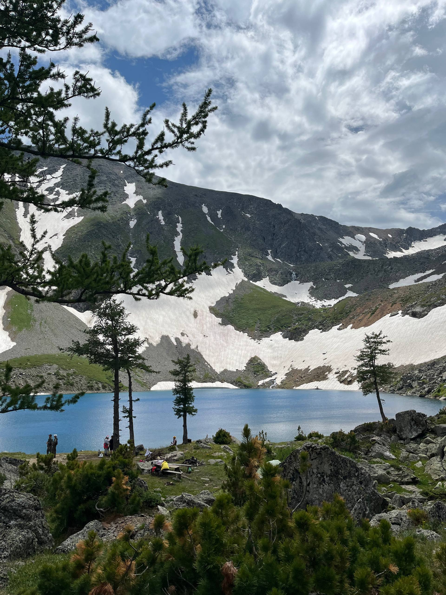

Радоновое озеро — самое известное природное место Риддера. Его фотографии расходятся по всему казнету, его ищут в поисковиках тысячи людей, но добраться самостоятельно удаётся единицам. Мы возим сюда туристов каждый сезон и знаем это место изнутри — от истории названия до того, что будет смешить вас на подъёме.
Откуда взялось название
На советских топографических картах это место значилось как Подбелковое озеро. Некоторые старожилы называли его Ворошиловским — по соседнему пику. Но в народе прижилось другое имя, и появилось оно благодаря геологам.
В начале 1970-х годов Лениногорский полиметаллический комбинат искал здесь новые месторождения драгоценных металлов. Прямо в скалу у озера пробили две штольни, проложили 11-километровую дорогу от Алтайской трассы в горы. Годы работы, тысячи тонн породы — а в итоге нашли не золото.
На большой глубине рабочие натолкнулись на мощный поток воды и радиоактивный газ — радон. Работы свернули, штольни законсервировали, все постройки разобрали. Газ никуда не делся: смешиваясь с водой, он образует радоновый источник, который и питает озеро. Так Подбелковое стало Радоновым.
Что касается воды — она считается целебной. Радон в малых концентрациях действительно применяется в бальнеологии. Пить её не рекомендуется, а вот искупаться при желании можно — вода чистая, хотя и ледяная даже в июле.
Как выглядит озеро
Первое, что поражает — цвет воды. Не голубой, не мутно-серый как у многих горных озёр, а глубокий насыщенный синий, почти сапфировый. Причина — растворённые минералы, которые попадают в воду вместе с радоновым источником.

Над озером — пик Ворошилова (2776 м), высочайшая точка Ивановского хребта. Сочетание бирюзовой воды и заснеженного пика создаёт тот самый вид, который люди потом долго не могут забыть. Когда машина выезжает на холм и озеро открывается впервые — в салоне неизменно кто-то охает.
Перед озером, метрах в пятидесяти от него, прямо у дороги есть небольшая лужа — метров десять-пятнадцать в диаметре. Мы всегда останавливаемся у неё и торжественно объявляем: «Всё, приехали — вот оно, Радоновое озеро». Реакция предсказуемая: люди молчат, переглядываются, кто-то неловко улыбается. На фотографиях выглядело иначе... Потом едем ещё пятьдесят метров — и открывается настоящее озеро. Вот тут уже смеются все, включая тех, кто только что был разочарован.
Загадки, которые наука объясняет с трудом
У озера есть несколько особенностей, которые удивляют даже людей, бывавших здесь много раз.
Ручей, который исчезает. Из штольни вытекает ручей — он течёт по камням, а потом просто пропадает. Уходит под землю и впадает в озеро невидимо. Куда именно — непонятно. Предполагают, что в озере есть подводный грот, уходящий под гору.
Верхнее Подбелковое озеро. Прямо над Радоновым, выше по склону, есть второе маленькое озеро. Оно питается тающими ледниками, а излишки воды стекают вниз небольшим водопадом — его хорошо видно с берега. Мы всегда поднимаемся туда с клиентами: это отдельная точка с красивыми видами и хорошим местом для фото.
Рыбы нет. В самом Радоновом озере рыба не водится — предположительно из-за содержания радона или потому что водоём промерзает зимой до дна. Зато в соседнем озере Рыбном, которое видно с пика Ворошилова, живёт хариус.
Дорога — отдельный аттракцион
Маршрут начинается с поворота на село Поперечное от Алтайской трассы. Первые несколько километров — обычная грунтовка. Дальше начинается то, ради чего многие и едут.
Серпантин к озеру — это не просто плохая дорога. Это глубокие промоины, острые углы, крены до 35 градусов. На некоторых участках машина наклоняется так, что через боковое стекло можно дотянуться до земли рукой. Доехать сюда на обычном автомобиле невозможно физически — нужен подготовленный полноприводный внедорожник с высоким клиренсом и опытный водитель.
Эмоции на серпантине — это часть тура, и мы это понимаем. Адреналин, крены, виды в пропасть — для многих это самое запоминающееся в поездке. Но за этим стоит серьёзная подготовка: наши машины проходят регулярное техническое обслуживание, гиды имеют большой опыт езды по экстремальному бездорожью. Мы ручаемся за безопасность — клиент может наслаждаться эмоциями, не думая о рисках.
Что делать на озере
Просто быть здесь
Озеро небольшое, можно обойти его по берегу за двадцать минут. Лучший вид открывается с противоположного от приезда берега — там видно и воду, и пик, и штольни одновременно. Отличная точка для фото.
Подняться к верхнему озеру и водопаду
Маршрут от берега Радонового до верхнего Подбелкового — около часа пешком. Тропа есть, подъём умеренный. На верхнем озере тихо и почти всегда никого. Водопад между двумя озёрами — ещё одна точка, которую любят фотографировать.
Восхождение на пик САВО или Ворошилова
Пик САВО — примерно на полпути к Ворошилову, занимает около двух часов от озера. Для большинства туристов это оптимальная цель: виды уже открываются панорамные, а физическая нагрузка остаётся в разумных пределах.
Полное восхождение на пик Ворошилова (2776 м) — около трёх с половиной часов в одну сторону. Маршрут не технически сложный, но длинный — важна хорошая физическая форма и правильная обувь. Наши гиды сопровождают восхождение и несут необходимое снаряжение.

Что взять с собой
- Треккинговые кроссовки или ботинки — обязательно
- Тёплый слой (на высоте холоднее на 5–8°C)
- Солнцезащитные очки и головной убор
- Powerbank — связь и навигация садят батарею быстро
- Вода и перекус на прогулку
- Хорошее настроение — главный обязательный предмет
Дождевики мы предоставляем — погода в горах меняется быстро. Горячее питание на маршруте тоже включено, так что с едой думать не нужно.
Частые вопросы
Хотите увидеть сами?
Возим на Радоновое озеро каждую неделю сезона — напишите нам, подберём дату
Забронировать тур →